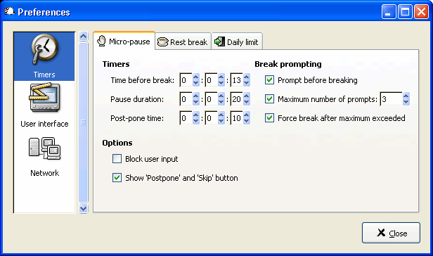
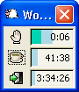
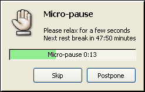
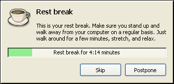
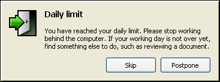
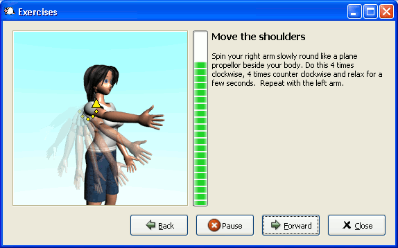

对于长时间进行计算机操作的人员，预防RSI，可参照以下的方法：
－ 每工作 30－45 分钟，至少休息 5 分钟。可以借助一些预防RSI的软件，帮助提醒你按时休息；
－ 在休息时伸展放松你的身体，做些体操，眼保健操之类的活动；
－ 时常注意正确的身体姿态，如不要躺着使用笔记本电脑，不要斜躺在桌椅上；
－ 时常调整桌椅、显示器、键盘、鼠标的位置，不要总固定在一个位置上；
－ 不要沉湎于上网；
－ 如果开始觉得疼痛或疼痛持续，应及早治疗。
采用软件来帮助预防RSI，是一种有效的方法。常见的付费软件有WorkPace、fit@work、RSIguard和A.R.M.S（Avoid Repetitive Motion Syndrome），免费开源的软件有Workrave、type-break-mode等。这里要介绍的软件是Workrave。
Workrave是一个预防和消除RSI的软件，它遵循遵循GPL规定，可在Microsoft Windows以及Linux下运行。它的网站地址为http://www.workrave.org ，可到去http://www.workrave.org/download/ 下载程序和代码，截至2006年12月6日，当前的版本是1.8.3。它可根据你设定好的时间间隔，让你小憩（micro-pauses）、休息 （rest breaks）以及工作时间（daily limit），并且可以弹出画面指导你进行运动。它具有统计功能，可以统计你每天的休息的情况、鼠标点击的次数、移动的距离以及敲击键盘的次数等。它还具有联网功能，使在网上的计算机都具有相同的设置，方便你在其他计算机上工作时，仍能够依照原来的设置进行休息。
下图是Workrave的设置页面，包括定时器的设置，用户界面的设置，以及网络设置。

定时器设置包括小憩、休息和工作时间的设置，以小憩为例，可设置小憩间的时间间隔（time before break)，小憩的持续时间（pause duration），延后时间（post-pone time），还可设置时候显示取消或延后按钮（show “post－pone” and “skip” button），这个选项可防止不遵守设置时间的行为，另外，还可设置是否扣除不活动的时间（suspend timer when inactive），此项避免人不在的时候仍然计时，一般当键盘或鼠标5－6秒没有动作的时候才停止计时。
下面的图形是Workrave的主窗口，手型图案为小憩的图标，茶图案为休息的时间，退出图案为剩余工作时间。也可将该窗口关闭，显示在工具栏中。

Main window
这个闪烁的窗口提醒你该小憩了。
Prelude window
这是小憩时间的窗口，你可以去到杯水，或闭上眼，这个窗口有取消(skip)和延时(postpone)两个按钮，当然，你也可以在设置页中取消它，这样你就不得不遵守这些时间了。

Micro-pause
下图告诉你该好好休息了，可以去做操，散步，去喝杯咖啡，嫌时间不够吗，可以在设置页中增加。

Rest break
呵呵，今天工作时间结束了，如果你还想工作，不如远离计算机，看看其他文件什么的。注意，时间可别设置的太短了，不然，还得重启计算机才行。也别设置的太长了，要防止”过劳死“。！）

Daily limit
跟着一起做操吧。

Exercises
在时间的设置上，我一般设置10分钟间隔一小憩，小憩时间2分钟，60分钟一休息，休息时间为10分钟，这个是参照“用(10+2)*5法来对付惰性”进行设置的，你也可以根据你的习惯设置。
刚开始用这个软件，可能你感觉不适应，总觉的时间间隔太短或着打扰你工作的劲头，不过，这是防止RSI的重要的方法，想想吧，身体和工作，哪个更重要些。